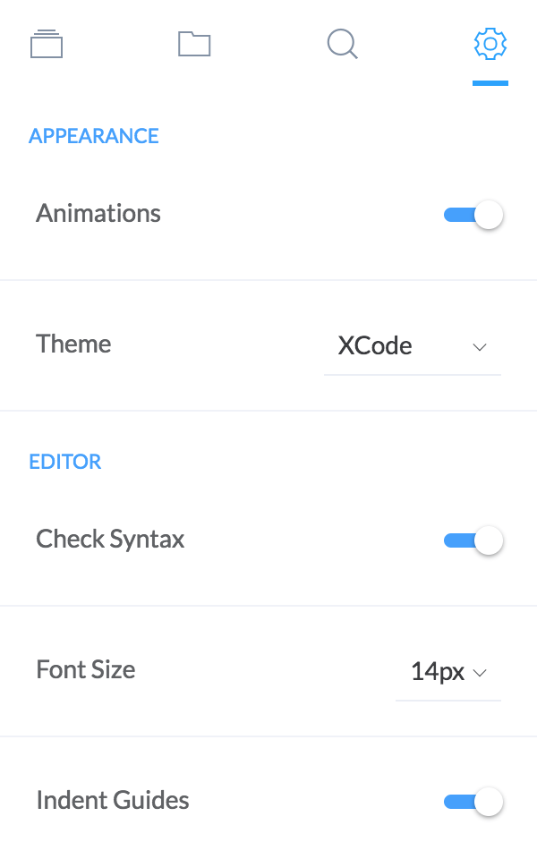
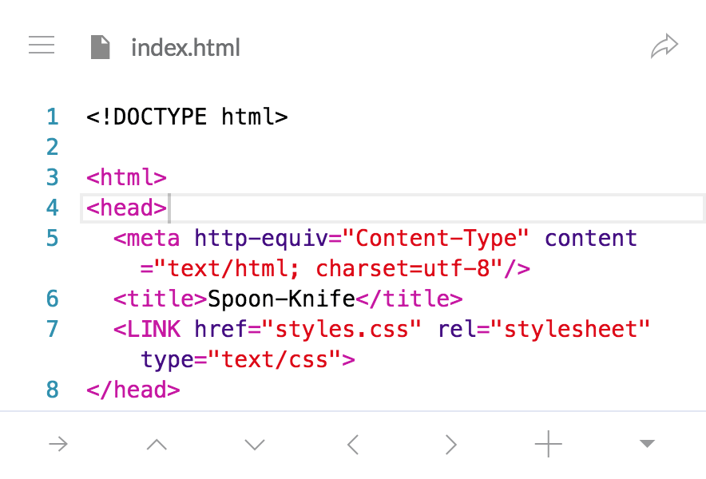

Editor Settings
Yay! This is a page dedicated to describing the long, tedious, and complex settings to use the editor. Hence, the name of this section. Nah, I promsie it won't be that bad. In fact, settings in Spck Editor are fairly straightforward (hopefully).

Appearance
-
Animation: Enables or disables most CSS animations. Disable editor animations if they are running slow on your device. Results in better performance and faster transitions.
-
Theme: Changes the colors of the code editor. Dark and light editor theme are tied with this setting.
Editor
-
Check Syntax: Creates a web worker to check the syntax of JavaScript, CSS, and HTML files. Other languages may or may not be supported for syntax checking.
-
Font Size: Changes the font size of the code editor.
-
Indent Guides: Adds indent guidelines to the code editor for visual guidance.
-
Line Numbers: Toggles the line numbers in the code editor.
-
Tab Size: Changes the number of spaces a tab represents in the code editor.
-
Word Wrap: Toggles soft line wraps in the code editor.
Note: These settings affect both the main editor as well as the diff editor.
Touch
-
Touch Features: Toggles on and off all touch features. This includes touch primary keyboard, files touch mode, and other touch features for the code editor.
-
Extra Touch Keyboard: Toggles the extra touch keyboard which contains key options for common code keywords and symbols.
Note: These settings are only available on devices with a touch screen.

Preview
- Live Preview: Toggles auto-refreshing in the preview iframe when file changes are made. This feature is not useful in the mobile version.

About
A section of the settings containing miscellaneous information about the editor. Contains the version information, and a link to report issues with the editor.
There is also an option to revoke privacy permissions granted to the app.
Warning: Revoking privacy information means removing all projects, files, and other user data that the app stores.